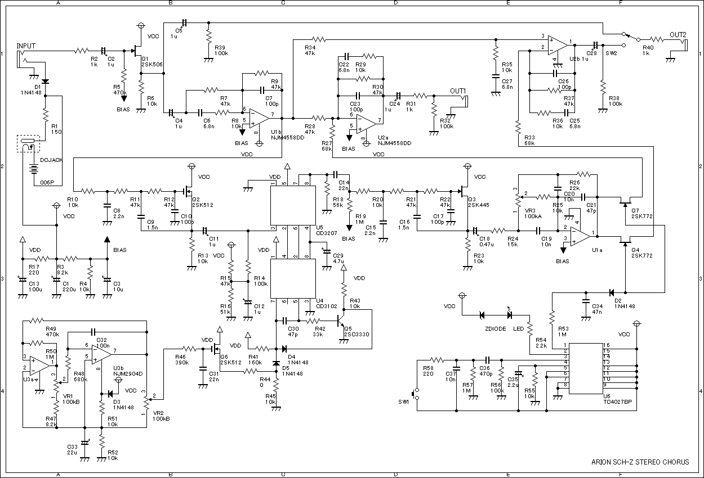
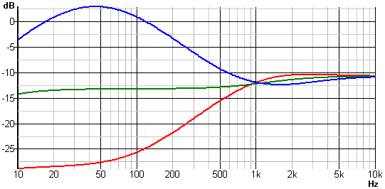
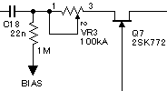
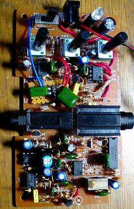

ARION SCH-Z STEREO CHORUS 改造
2008年01月10日 カテゴリー：修理・改造・解析
ARION SCH-Z STEREO CHORUSといえば激安のわりに良いということで評判です。しかしながら音量が上がるとか低音出すぎとかいう問題もあります。そこで改造を施してみることにしました。
回路図がネット上には無いみたいなので、採取してみることにしました。正直すごく大変でした。
Arion SCH-Z Stereo Chorus schematic（画像クリックで拡大）

改造していきます。
まず、ステレオは使わないので部品をとっぱらいました。オペアンプの使わない入力はアースに落としておきます。あとコンデンサをところどころ交換してみました。音質が上がったような気分になります。
トーン回路の周波数特性をシミュレーションしてみました。

青がトーンつまみ0、緑が5、赤が10です。ただしポットがBカーブでのシミュレーションです。実際にはAカーブなのでつまみが真ん中ぐらいだと低域が強調されてしまいます。これがブーミーだといわれる原因だと思います。Aカーブだとだいたい7ぐらいで特性がフラットになるみたいです。
どうもこの低域をブースト／カットするトーン回路は使えなさそうです。なので部品を取っ払って下図のようにしました。

ポットはエフェクトレベルの調整になります。同時にR27は22kΩにしてます。ただしAカーブなので最後のほうで急に音量が上がります。まぁ音量を上げることはまずないと思うのでよしとします。
C30を大きくするとエグい感じになりますが、結局47pがベストみたいで変えていません。
LFOの回路はよく知らないんですが、C32を小さくすると揺れのスピードが上がります。ステレオ化をなくして余ったスイッチを加速スイッチにしました。
↓改造後中身写真（クリックで拡大）

ベタですがLEDは青に変えてます。ジャンパーだらけですが、なかなか使いやすくなったんじゃないでしょうか。
もっと簡単な改造
トーンコントロールは右に回すほど低音カットになる、ということを頭に入れておけばそれほど使いにくくないかもしれません。それでも音量を小さくしたいなら、R27（ステレオアウト側はR33）を82kΩや100kΩにすれば改善できそうです。ただしコーラスのかかり方が薄くなります。